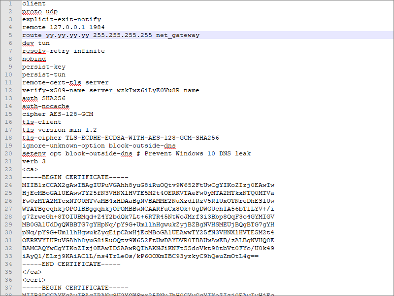

OpenVPN + Cloak
People in not-free countries often have a problem with OpenVPN connections being blocked by government censors. This article describes a solution.
Cloak disguises a proxy or VPN server as a web server in order to evade deep packet inspection (DPI). The disguised server secretly implements Shadowsocks, OpenVPN, or Tor.
In this article, we deploy OpenVPN and Cloak on a Debian 10 server, with a camouflage website running on Nginx. It will be similar on recent versions of Ubuntu.
Before you set up your server:
- You will need a domain name, either free or paid
- You will need to create a DNS
Arecord pointing from your server hostname to your server’s IP address
In the examples in this article, we give the server host name as xxx.yyyyy.xyz and the server IP address as yy.yy.yy.yy.
We end the tutorial by describing the procedure for setting up a Windows client. This will not work with a Linux client running Network Manager due to #1417169. Network Manager for OpenVPN does not support special route keywords such as
vpn_gateway or net_gateway.
1. Set Up Camouflage Web Server
1.1. Open Firewall
There are multiple ways to implement a firewall on Debian 10: nftables, iptables, ufw, and firewalld. The modern way is nftables. However, in a few minutes we are going to install OpenVPN with a script that uses iptables. Therefore we will start off by using iptables to build a basic firewall on the server. Issue these commands in turn:
iptables -A INPUT -m conntrack --ctstate ESTABLISHED,RELATED -j ACCEPT
iptables -A INPUT -i lo -j ACCEPT
Accept IPv4 PING requests:
iptables -A INPUT -p icmp --icmp-type echo-request -j ACCEPT
Open port 22 for SSH. (If you can restrict the port 22 rule so that only certain source IP addresses are whitelisted for SSH access, then
so much the better.)
iptables -A INPUT -p tcp --dport 22 -j ACCEPT
Add rules to open ports 80 and 443 for HTTP and HTTPS respectively:
iptables -A INPUT -p tcp --dport 80 -j ACCEPT
iptables -A INPUT -p tcp --dport 443 -j ACCEPT
Drop all unexpected input:
iptables -P INPUT DROP
Save the iptables rules so that they persist after reboots:
apt install iptables-persistent -y
1.2. Implement BBR
Bottleneck Bandwidth and Round-trip propagation time (BBR) is a TCP congestion control algorithm developed at Google. Under certain types of network congestion, it will improve your latency. Implement BBR TCP congestion control on your server with the following commands:
cat >> /etc/sysctl.d/50-bbr.conf <<EOF
net.core.default_qdisc=fq
net.ipv4.tcp_congestion_control=bbr
EOF
sysctl -p /etc/sysctl.d/50-bbr.conf
1.3. Install Nginx
Install the Nginx web server on your server:
apt update && apt upgrade -y
apt install nginx -y
1.4. Configure Nginx
We want to make the Nginx web site look as much as possible like a realistic production server. Therefore edit the main Nginx configuration file:
vi /etc/nginx/nginx.conf
Uncomment the line:
server_tokens off;
Save the main Nginx configuration file. Then edit the default site definition file:
vi /etc/nginx/sites-available/default
Insert the real server name, which in our example is xxx.yyyyy.xyz:
server_name xxx.yyyyy.xyz;
Immediately below that, insert lines that will allow only expected HTTP request methods:
if ($request_method !~ ^(GET|HEAD|POST)$ )
{
return 405;
}
Just like a real server, add a line to provide realistic browser caching:
expires 1h;
Save the default site definition file.
Restart Nginx for all your changes:
nginx -t
systemctl restart nginx
1.5. Add Camouflage Content to Web Server
Add a few realistic webpages to your camouflage site. Here is an example of how you might do that. You can add different content if you have some.
apt install wget zip unzip -y
wget https://github.com/arcdetri/sample-blog/archive/master.zip
unzip master.zip
cp -rf sample-blog-master/html/* /var/www/html/
At this point, you can test to see if your host name resolves to your IP address by opening a browser on your PC and visiting the HTTP version of your site. Using
our example of a host named xxx.yyyyy.xyz, that would be:
http://xxx.yyyyy.xyz
1.6. Add SSL Certificate to Web Server
Now we make the site accessible by HTTPS on port 443, following the instructions for Nginx and Debian 10 on the Certbot website.
apt install certbot python-certbot-nginx -y
certbot --nginx
certbot renew --dry-run
You now have a working HTTPS camouflage website with a few sample pages on it. Test this by opening a browser on your PC and visiting the HTTPS version of your site. In our example, that would be:
https://xxx.yyyyy.xyz
2. Install OpenVPN on Server
2.1. Download Angristan OpenVPN Install Script
Get the Angristan script from GitHub:
wget https://raw.githubusercontent.com/angristan/openvpn-install/master/openvpn-install.sh
Make the script executable:
chmod +x openvpn-install.sh
2.2. Run Script and Create Client
Run the script:
./openvpn-install.sh
In most cases, you can accept the suggested default answers to the questions:
- IP address should accurately reflect the IP address of your server
- Port choice should be
1194(the default) - Protocol should be
UDP(the default) - For DNS servers, you can choose your favorites, e.g. Cloudflare or Google
- For enable compression, recommend
nfor no (the default) - For customized encryption settings, recommend
nfor no (the default)
After answering all the questions, press any key to continue and run the script.
- For the first client name, we will put
windows10 - For the private key file, select option
1, passwordless (the default)
You can check that OpenVPN is running already:
systemctl status openvpn@server
If necessary, type q to quit the status display.
Check that OpenVPN is listening for UDP input on port 1194:
ss -tulpn | grep 1194
2.3. Adjust Firewall Rules
Take a look at the iptables firewall after running the script:
iptables -vnL
You will see that the script has opened port 1194 to the public.
We want to make the OpenVPN server as invisible as possible. Therefore we will close port 1194 to the public. (In a few minutes, we’ll add Cloak to pass incoming traffic to OpenVPN on the loopback interface port 1194.)
Edit the iptables rules that get added when OpenVPN is brought up:
vi /etc/iptables/add-openvpn-rules.sh
Delete the line that inserts an input rule accepting UDP packets on port 1194. Save the file.
Edit the iptables rules that get removed when OpenVPN is brought down:
vi /etc/iptables/rm-openvpn-rules.sh
Delete the line deleting the input rule accepting UDP packets on port 1194. Save the file.
The easiest way to implement this right now is to reboot the server:
reboot
After rebooting, SSH into your server again, and check the revised iptables rules:
iptables -vnL
You should see that port 1194 is no longer open to the public. Traffic that is passed from Cloak to OpenVPN will be accepted, though, since it uses the loopback
interface (lo), for which we added a special iptables rule at the beginning.
3. Install Cloak on Server
3.1. Move HTTPS Site to Port 8443
Right now, Nginx is listening on ports 80 and 443. We’re going to make Cloak listen on port 443, so we’ll move Nginx and make it listen on port 8443 instead.
Edit the Nginx default site definition file:
vi /etc/nginx/sites-available/default
Change the lines that make the SSL server listen on port 443 to make it listen on port 8443:
listen [::]:8443 ssl ipv6only=on; # managed by Certbot
listen 8443 ssl; # managed by Certbot
Save the default site definition file. Restart Nginx to make this change take effect:
systemctl restart nginx
3.2. Download Cloak
Open a browser on your PC and visit the GitHub Cloak releases page. Determine the version
number of the latest release. For example, right now it is 2.5.4.
On your server, download the latest binary for 64-bit Linux:
wget https://github.com/cbeuw/Cloak/releases/download/v2.5.4/ck-server-linux-amd64-v2.5.4
Copy the binary into a directory in your path with the name ck-server:
cp ck-server-linux-amd64-v2.5.4 /usr/local/bin/ck-server
Make ck-server executable:
chmod +x /usr/local/bin/ck-server
Allow Cloak to bind to privileged ports (i.e. TCP/IP port numbers below 1024):
setcap CAP_NET_BIND_SERVICE=+eip /usr/local/bin/ck-server
3.3. Generate Public-Private Key Pair
Generate a public-private key pair:
ck-server -k
The public key and private key are delivered, separated by a comma. Here is an example of what the result might look like:
eRx9vO3x8i1hJ9PucrnlUsN74J/g7MPLymUJCrrQJVM=,MF2tHiGXjP3P3fIIxjt02un2G0qtXdbArmrWsTfz7FM=
- The base-64 string before the comma is the public key, to be given to users
- The base-64 string after the comma is the private key, to be kept on the server
3.4. Generate Administrator Id
Generate a secret identifier for the administrator like this:
ck-server -u
It will produce a base-64 string that looks like this:
SI6bHNp9+Mlc0+/LxhhYig==
3.5. Generate User Id
Generate an identifier for an ordinary user. We will make this user have no bandwidth or credit limit restrictions.
ck-server -u
The command will produce a base-64 string that looks like this:
lNEQtGxl6BgYmVg9N5kBRA==
3.6. Configure Cloak
For your reference, there is a sample configuration file on GitHub.
Create a directory for Cloak:
mkdir /etc/cloak
Edit your server’s configuration file for Cloak:
vi /etc/cloak/ckserver.json
Insert contents like the example below, substituting in your user id, private key, and administrator id:
{
"ProxyBook": {
"openvpn": [
"udp",
"127.0.0.1:1194"
]
},
"BindAddr": [
":443"
],
"BypassUID": [
"lNEQtGxl6BgYmVg9N5kBRA=="
],
"RedirAddr": "127.0.0.1:8443",
"PrivateKey": "MF2tHiGXjP3P3fIIxjt02un2G0qtXdbArmrWsTfz7FM=",
"AdminUID": "SI6bHNp9+Mlc0+/LxhhYig==",
"DatabasePath": "/etc/cloak/userinfo.db",
"StreamTimeout": 300
}
ProxyBooktells Cloak where to forward authenticated proxy traffic to, which for us is OpenVPN on port1194BindAddris a list of addresses Cloak will bind and listen to, which for us is443BypassUIDis a list of UIDs that are authorised without any bandwidth or credit limit restrictionsRedirAddris the redirection address when the incoming traffic is not from an authenticated Cloak clientPrivateKeyis the static curve25519 Diffie-Hellman private key encoded in base-64AdminUIDis the user id of the admin user in base-64DatabasePathis the path touserinfo.db(ifuserinfo.dbdoesn’t exist in this directory, Cloak will create one automatically)StreamTimeoutis the number of seconds of no sent data after which the incoming Cloak client connection will be terminated
Save the Cloak server configuration file.
3.7. Configure Systemd for Cloak
Create a systemd service file, so that we can make Cloak start after every reboot and run continually as a service:
vi /usr/lib/systemd/system/cloak.service
Insert contents like this:
[Unit]
Description=Cloak Server
After=network.target
[Service]
Type=simple
ExecStart=/usr/local/bin/ck-server -c /etc/cloak/ckserver.json
Restart=on-failure
[Install]
WantedBy=multi-user.target
Save the file.
3.8. Run Cloak
Make Cloak start after every reboot and run continually as a service:
systemctl enable cloak
systemctl start cloak
Check the status of the Cloak service:
systemctl status cloak
The above command should show that Cloak is active (running).
ss -tulpn | grep 443
The above command should show that:
ck-serveris listening on port443nginxis listening in port8443
Your work on the server is done for now, so exit your SSH session with the server:
exit
3.9. Check from PC
From your PC, check what an unauthorized visitor to your server would see. In our example, the address to put into your browser would be:
https://xxx.yyyyy.xyz
You should see an ordinary looking website.
4. Set Up Windows 10 Client
Now work on your PC, which in this tutorial is running Windows 10.
4.1. Download Cloak Client
In Firefox or whatever browser you are using, go to GitHub and determine the latest version of
Cloak. We will use version 2.5.4 as our example.
Still in your browser, download ck-client-windows-amd64-2.5.4.exe from GitHub to your PC’s Downloads directory.
4.2. Configure Cloak Client
For your reference, there is a sample client configuration file on GitHub. Create your client’s configuration file for Cloak, ckclient.json, in the same folder as your executable download.
Insert contents like the example below, substituting in your user id, public key, and hostname:
{
"Transport": "direct",
"ProxyMethod": "openvpn",
"EncryptionMethod": "aes-gcm",
"UID": "lNEQtGxl6BgYmVg9N5kBRA==",
"PublicKey": "eRx9vO3x8i1hJ9PucrnlUsN74J/g7MPLymUJCrrQJVM=",
"ServerName": "xxx.yyyyy.xyz",
"NumConn": 4,
"BrowserSig": "firefox",
"StreamTimeout": 300
}
Transportcan be either direct or CDNProxyMethodis the name of the proxy method you are usingEncryptionMethodis the name of the encryption algorithm you want Cloak to use, over and above the encryption in the proxy method (we useaes-gcmhere because OpenVPN has such a unqiue fingerprint)UIDis your user id in base-64PublicKeyis the static curve25519 public key, given by the server adminServerNameis the domain you want to make your ISP or firewall think you are visitingNumConnis the amount of underlying TCP connections you want to useBrowserSigis the browser you want to appear to be usingStreamTimeoutis the number of seconds of no sent data after which the incoming proxy connection will be terminated
Save the file.
4.3. Install OpenVPN Client
Download the OpenVPN for Windows installer from the OpenVPN community downloads page.
Run the downloaded installer to install OpenVPN on your Windows client.
4.4. Download OVPN File
In your home directory on the server, you have a file windows10.ovpn that you created earlier.
On your Windows PC, open a Windows Command prompt (Win+r, then cmd).
Download that file from the server to the client. The command below assumes you are using PuTTY and its accompanying utilities. Substitute in your actual server hostname for xxx.yyyyy.xyz in the command:
"C:\Program Files\PuTTY\pscp.exe" -P 22 "root@xxx.yyyyy.xyz:windows10.ovpn" "Downloads\windows10.ovpn"
4.5. Edit OVPN File
In a text editor such as Notepad or Notepad++, edit the file windows10.ovpn you just downloaded. Change the remote server to 127.0.0.1
port 1984 like this:
remote 127.0.0.1 1984
Also add a line, replacing yy.yy.yy.yy with your actual server IP address:
route yy.yy.yy.yy 255.255.255.255 net_gateway

Save the file windows10.ovpn.
4.6. Import VPN to OpenVPN GUI
From your Windows desktop, start the OpenVPN GUI.
Right-click on its icon in the system tray, and select the item to import the amended OVPN file windows10.ovpn.
4.7. Run Cloak
Open a Windows Command Prompt. Issue the commands that follow, replacing yy.yy.yy.yy by your actual server IP address:
cd Downloads
ck-client-windows-amd64-v2.5.4.exe -u -c ckclient.json -s yy.yy.yy.yy
Leave the Command Prompt window open with Cloak client running in it.
4.8. Run OpenVPN
Right-click on the OpenVPN icon in the system tray, and select the item to connect to windows10.ovpn
4.9. End-to-End Test
Check the end-to-end functionality to confirm that OpenVPN and Cloak are configured correctly. In Firefox or whatever browser you are using, visit IP Chicken. You should see the IP address of the server, not your local client.
5. Get Help and Report Issues
- You can find out more about Cloak in the README on GitHub
- You can ask general questions about Cloak on ntc.party
- For Cloak issues, post in the Issues section for Cloak on GitHub
- For OpenVPN questions, post in the OpenVPN forum
Updated 2021-06-19